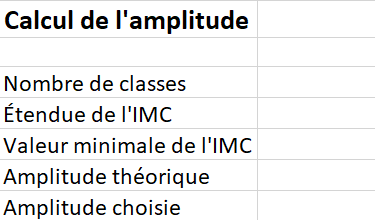
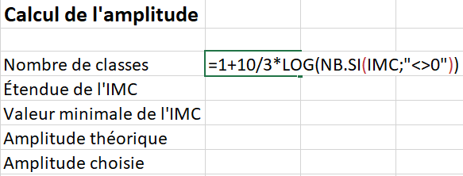
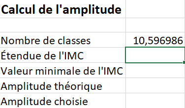
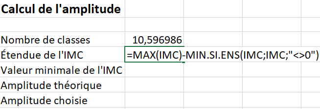
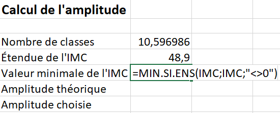
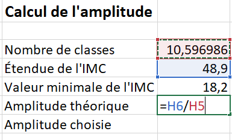
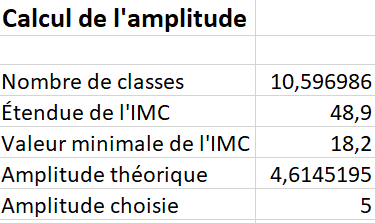
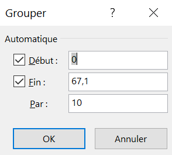
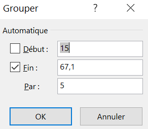

Section 3.2 Laboratoire
Dans ce laboratoire, on cherche à représenter la répartition de femmes d’origine pima vivant en Arizona selon l’indice de masse corporelle, ainsi que la répartition de femmes d’origine pima vivant en Arizona, par résultat au test diabétique, selon l’indice de masse corporelle.
Pour cela, on utilise les variables IMC et Atteint.
Sous-section 3.2.1 Tableau croisé dynamique (variable quantitative continue)
Pour réaliser l’étude d’une variable quantitative continue, il est nécessaire de construire un tableau de fréquences en regroupant les valeurs en classes, car il y a trop de valeurs différentes pour permettre une synthèse efficace. Le tableau croisé dynamique généré par Excel n’est pas adéquat, car il ne regroupe pas les valeurs des variables par défaut. On commence par rappeler les étapes de création d’un tableau croisé dynamique, soit celui de la répartition des 768 femmes d’origina pima vivant en Arizona selon l’indice de masse corporelle.
- Dans le classeur Excel, ajouter une nouvelle feuille de calcul intitulé Étude IMC. Déplacer cette feuille en dernière position si Excel ne le fait pas automatiquement.
- Sélectionner la cellule
B3dans cette feuille de calcul. - Insérer un tableau croisé dynamique vide tel que vu à la Sous-sous-section 1.2.1.
-
Glisser et déposer la variable IMC dans la zone de saisie Lignes, ainsi que deux fois dans la zone de saisie Valeurs (voir la Figure 3.2.1).

Figure 3.2.1. Glissement de la variable IMC dans les zones de saisie Lignes et Valeurs Dans la zone de saisie Valeurs, cliquer sur la flèche du menu déroulant du premier onglet, puis sélectionner l’option Paramètres des champs de valeurs pour modifier le calcul. On veut le nombre de femmes pour la deuxième colonne (et non la somme comme Excel fait par défaut), ainsi que le pourcentage de femmes pour la troisième colonne (voir la Sous-sous-section 1.2.2 pour référence). -
Au final, le tableau croisé dynamique généré doit ressembler à la Figure 3.2.2.

Figure 3.2.2. Les trois colonnes du tableau croisé dynamique final de la répartition des femmes selon l’indice de masse corporelle
La première ligne du tableau croisé dynamique révèle que onze femmes ont enregistré un indice de masse corporelle de 0. Cette valeur étant impossible, il s’agit donc d’une valeur aberrante. On choisit de filtrer ces valeurs et de les exclure lors de la création du tableau de fréquences, de l’histogramme, ainsi que des calculs des mesures statistiques, car ces dernières pourraient fausser les interprétations.
Sous-section 3.2.2 Filtrer les valeurs aberrantes
Il existe plusieurs façons de filtrer des valeurs aberrantes. On choisit de le faire avant de regrouper les valeurs en classes.
-
Dans une cellule de la première colonne du tableau croisé dynamique généré à la Sous-section 3.2.1, cliquer avec le bouton droit de la souris. Un menu contextuel s’affiche (voir la Figure 3.2.3).

Figure 3.2.3. Affichage du menu contextuel de la première colonne du tableau croisé dynamique -
Sélectionner l’option Filtres s’appliquant aux étiquettes suivi de l’option Est différent de (voir la Figure 3.2.4).

Figure 3.2.4. Filtrage s’appliquant aux étiquettes -
Une boîte de dialogue s’affiche. Il faut choisir d’afficher les éléments pour lesquels l’étiquette est différent de \(0\text{.}\) Ainsi, dans la zone de saisie à droite de l’option est différent de, il faut taper la valeur 0 (voir la Figure 3.2.5) et cliquer sur OK.

Figure 3.2.5. Afficher les éléments pour lesquels l’étiquette est différent de \(0\)
Sous-section 3.2.3 Créer des classes
Avant de regrouper les valeurs en classes, il est nécessaire de déterminer le nombre de classes optimal ainsi que leur amplitude. Les choix d’Excel par défaut ne sont pas toujours adéquats. Il est donc recommandé de documenter clairement ces décisions dans la feuille Excel pour en garder une trace
Sous-sous-section 3.2.3.1
-
Dans la cellule
G3, taper le titre Calcul de l’amplitude (voir la Figure 3.2.6).Figure 3.2.6. Section pour documenter le calcul de l’amplitude Taper Nombre de classes dans la celluleG5, Étendue de l’IMC dans la celluleG6, Valeur minimale de l’IMC enG7, Amplitude théorique enG8, et finalement, Amplitude choisie dans la celluleG9(voir la Figure 3.2.6).On souhaite calculer le nombre théorique de classes (K) à l’aide de la formule de Sturges, soit \(1+\dfrac{10}{3}\log{n}\text{,}\) où \(n\) est le nombre de données. Dans Excel, on peut insérer des fonctions à partir de l’onglet Formules (voir la Figure 3.2.7), ou en saisissant directement le symbole = dans une cellule, puis en tapant manuellement la fonction. ATTENTION : il ne faut jamais oublier le symboler = avant d’insérer une fonction.
Figure 3.2.7. Insérer une fonction à partir de l’onglet Formules -
La formule Excel LOG renvoie le logarithme de l’argument qui se trouve dans les parenthèses. Dans des formules Excel, on peut faire référence à des adresses de cellules ou au nom d’une plage de données.La fonction Excel NB renvoie le nombre de données de la plage de cellules sélectionnées. Si l’on mettait
NB(IMC), ceci renvoie la valeur 768, soit le nombre total de cellules non vides de la variable IMC. Cependant, on veut exclure les femmes qui ont eu une valeur erronée de 0 comme indice de masse corporelle. Excel permet d’inclure des conditions dans ses formules avec le SI.La fonction NB.SI détermine le nombre de cellules non vides répondant à la condition à l’intérieur d’une plage. La condition souhaitée est que l’on compte les valeurs d’indice de masse corporelle différente de \(0\text{.}\) Dans Excel, le symbole < > correspond à l’expression différent de. Ainsi, la formuleNB.SI(IMC;"< > 0")compte le nombre de cellules non vides de la plage IMC qui sont différentes de 0.Figure 3.2.8. Formule pour déterminer le nombre théorique de classes -
Une fois la formule rentrée, taper Enter. On obtient environ \(10,6\text{.}\)
Figure 3.2.9. Nombre théorique de classes selon la formule de Sturges -
Dans la cellule
H6, on souhaite déterminer l’étendue de l’indice de masse corporelle, soit E. Taper la formule=MAX(IMC)-MIN.SI.ENS(IMC;IMC;"< > 0")(voir la Figure 3.2.10).La formule Excel MAX renvoie la plus grande valeur parmi la liste de valeurs. La fonction Excel MIN renvoie la plus petite valeur parmi une liste de valeurs.Si l’on metMIN(IMC), ceci nous renvoie la valeur 0. Cependant, on veut exclure les femmes qui ont eu une valeur erronée de 0 comme indice de masse corporelle. On veut donc la deuxième plus petite valeur.La fonction MIN.SI.ENS renvoie la valeur minimale parmi la plage de cellules spécifiées par un ensemble de critères donné. La condition souhaitée est que l’on détermine la valeur minimale différente de \(0\text{.}\) Ainsi, la formuleMIN.SI.ENS(IMC;IMC;"< > 0")détermine la valeur minimale de l’indice de masse corporelle avec le critère que l’IMC doit être différent de \(0\text{.}\)Figure 3.2.10. Formule pour déterminer l’étendue de l’IMC L’étendue vaut 48,9. -
Dans la cellule
H7, taper la formule=MIN.SI.ENS(IMC;IMC;"< > 0")(voir la Figure 3.2.11) pour déterminer la valeur minimale (autre que 0) de l’indice de masse corporelle. Il est essentiel de connaître la valeur minimale pour s’assurer de l’inclure lorsque l’on regroupe les valeurs.Figure 3.2.11. Formule pour déterminer la valeur minimale de l’IMC (différente de 0) La deuxième valeur la plus petite est 18,2. -
On veut déterminer l’amplitude théorique, soit l’étendue divisée par le nombre théorique de classes \(\left(\dfrac{E}{K}\right)\text{.}\) Dans la cellule
H8, taper la formule=H6/H5(voir la Figure 3.2.12). Dans des formules Excel, on peut faire référence à des cellules. La celluleH6correspond à l’étendue et la celluleH5correspond au nombre théorique de classes.Figure 3.2.12. Formule pour déterminer l’amplitude théorique des classes -
On obtient une amplitude théorique d’environ 4,6. Ceci n’est pas un nombre entier. On choisit 5. (voir la Figure 3.2.13).
Figure 3.2.13. Détermination de l’amplitude choisie
Sous-sous-section 3.2.3.2 Grouper les valeurs en classes
S’assurer d’afficher les éléments sans données et grouper après...blabla
-
Dans une cellule de la première colonne du tableau croisé dynamique, cliquer sur le bouton droit de la souris (voir la Figure 3.2.14). Un menu déroulant s’affiche.

Figure 3.2.14. Menu déroulant de la première colonne d’un tableau croisé dynamique - Cliquer sur l’option Paramètres de champs (voir la Figure 3.2.14).
-
Une boîte de dialogue s’affiche (voir la Figure 3.2.15). Cliquer sur l’onglet Disposition et impression. Cocher ensuite l’option Afficher les éléments sans données.

Figure 3.2.15. La boîte de dialogue pour afficher les éléments sans données En cochant cette option, on s’assure que lorsque l’on va grouper les valeurs de l’indice de masse corporelle en classes, Excel va afficher les classes qui ne contiennent aucun élément. -
Dans une cellule de la première colonne du tableau croisé dynamique, cliquer sur le bouton droit de la souris (voir la Figure 3.2.16). Un menu déroulant s’affiche.

Figure 3.2.16. Menu déroulant de la première colonne d’un tableau croisé dynamique - Cliquer sur l’option Grouper
-
Une boîte de dialogue s’affiche (voir la Figure 3.2.17). Excel propose une borne inférieure (soit \(0\text{,}\) la valeur minimale de la variable, une borne supérieure (soit \(67,1\text{,}\) la valeur maximale de la variable) et une amplitude pour les classes (soit \(10\)).
Figure 3.2.17. La boîte de dialogue pour grouper les données d’un tableau croisé dynamique -
Taper \(15\) comme valeur minimale au lieu du choix suggéré d’Excel de 0 et taper \(5\) comme amplitude au lieu de 10 (voir la Figure 3.2.18).
Figure 3.2.18. Choix de 15 comme valeur minimale et 5 comme amplitude des classes En choisissant 15 comme valeur minimale de la première classe, on s’assurer d’inclure la valeur minimale de 18,2. -
Cliquer sur OK. Le tableau croisé dynamique résultant groupe les valeurs de la variable IMC en classe d’amplitude valant \(5\) (voir la Figure 3.2.19). Puisque l’on a appliqué un filtre excluant les femmes enregistrant une valeur erronée de \(0\text{,}\) le tableau commence à 15. Cette valeur inclut la deuxième valeur minimale de 18,2.

Figure 3.2.19. Tableau croisé dynamique commençant à 15 avec des classes d’amplitude 5